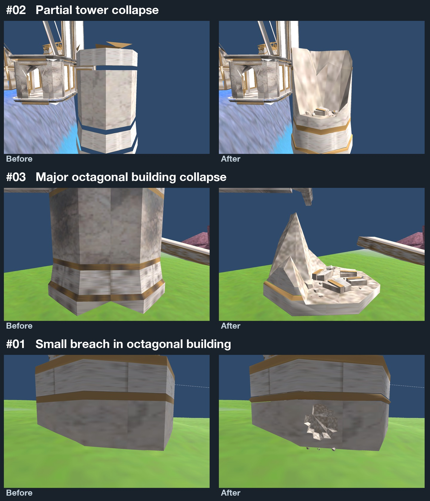
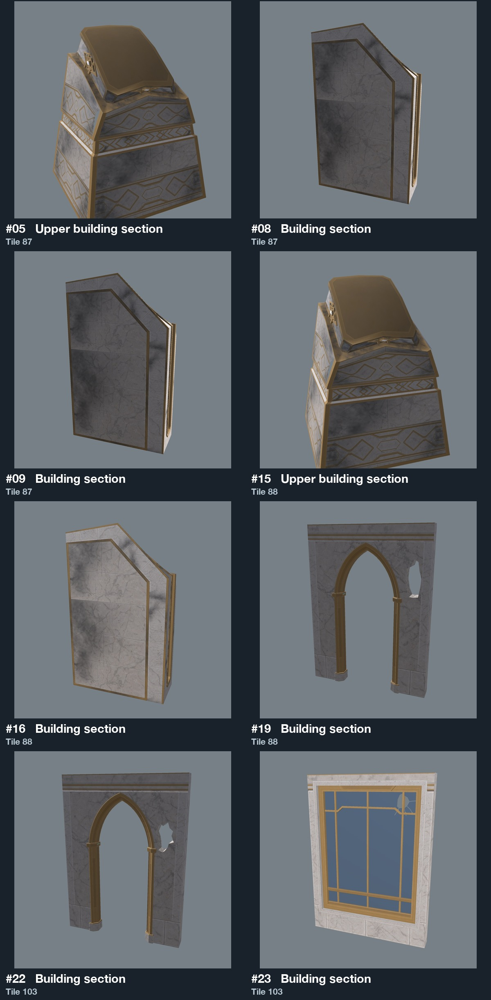
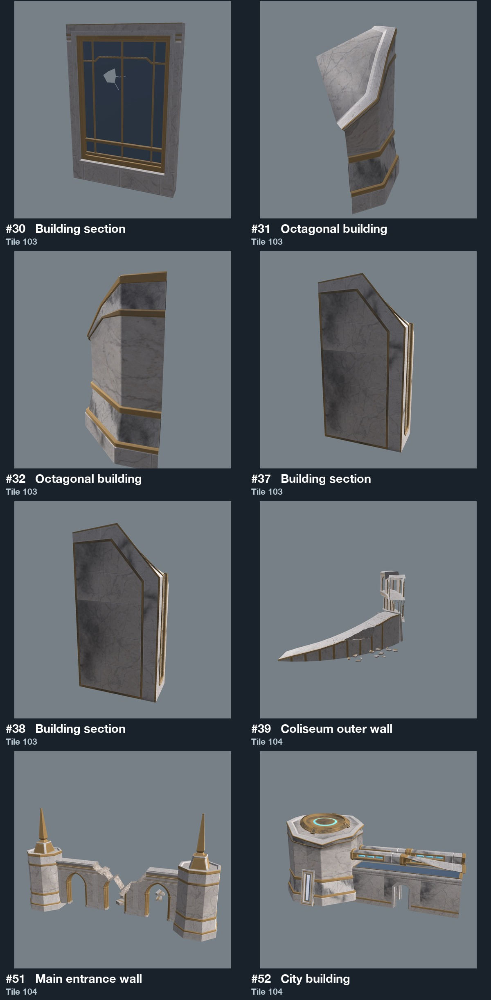
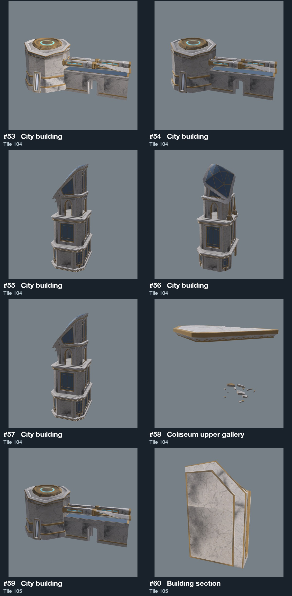
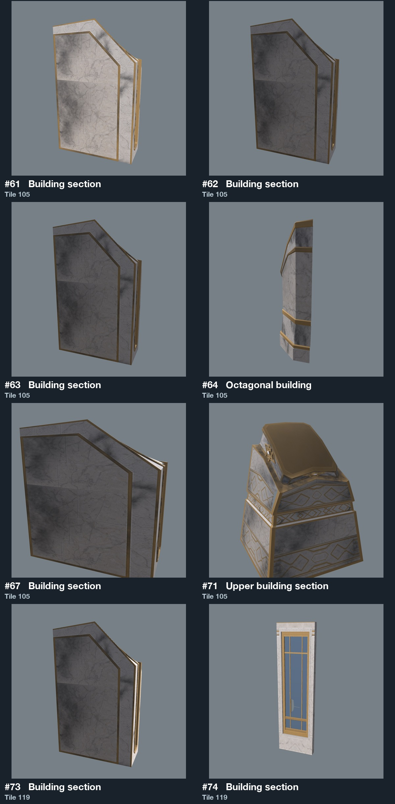
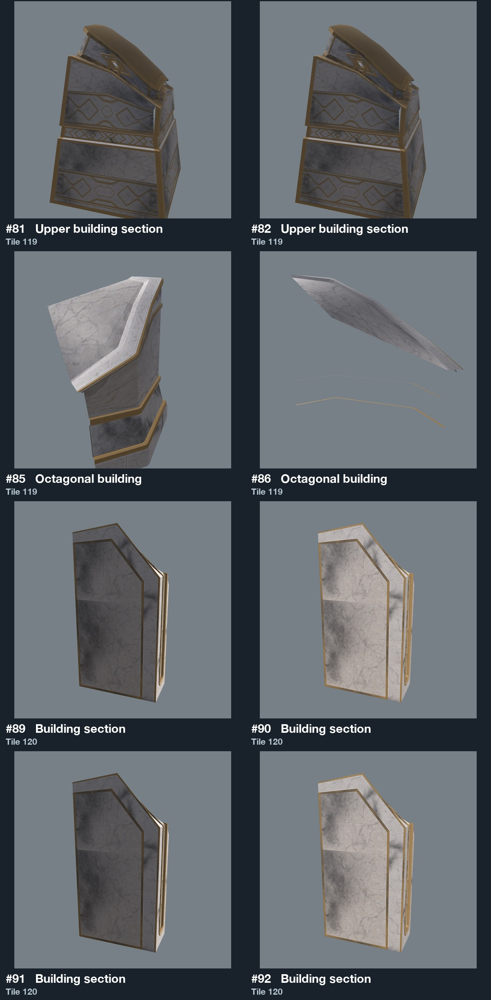
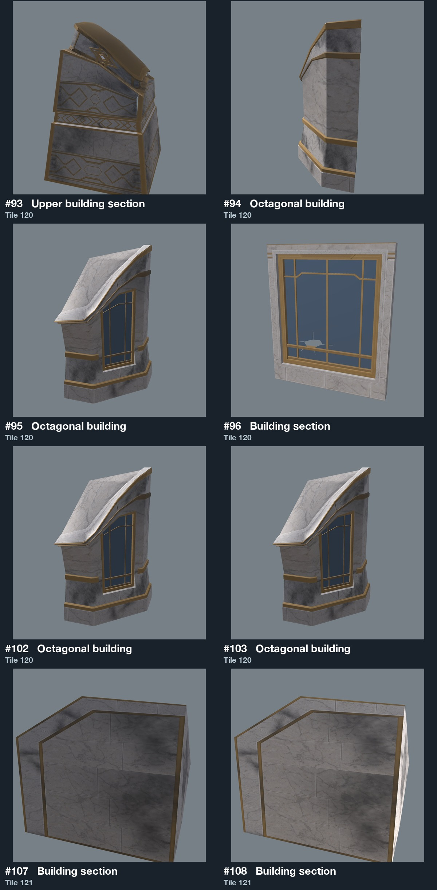

Building damage before and after

Buildings and structural sections · 1

Buildings and structural sections · 2

Buildings and structural sections · 3

Buildings and structural sections · 4

Buildings and structural sections · 5

Buildings and structural sections · 6
